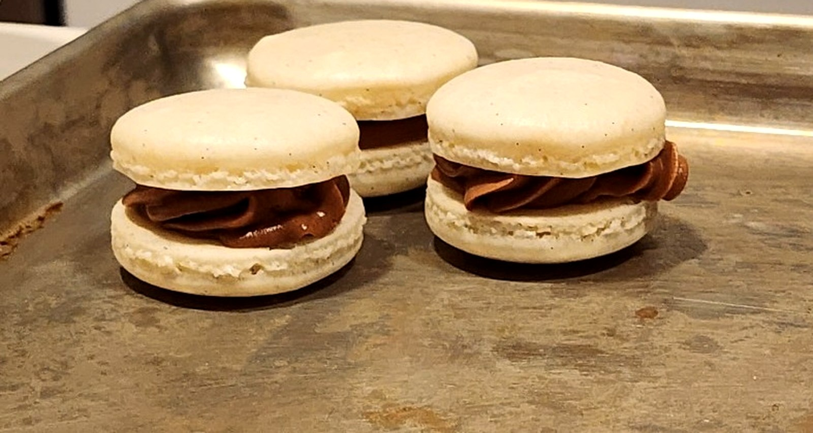
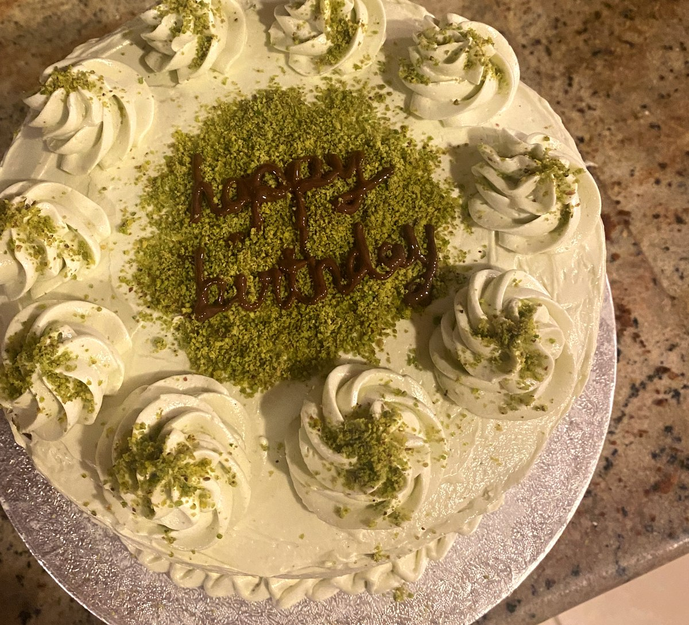
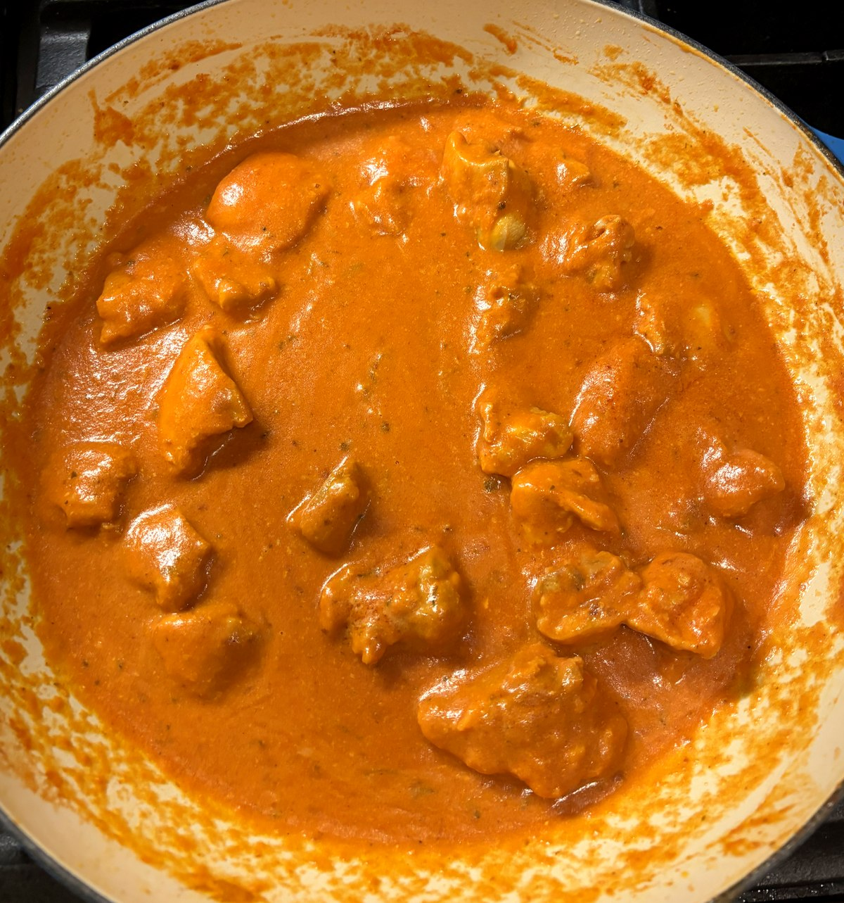
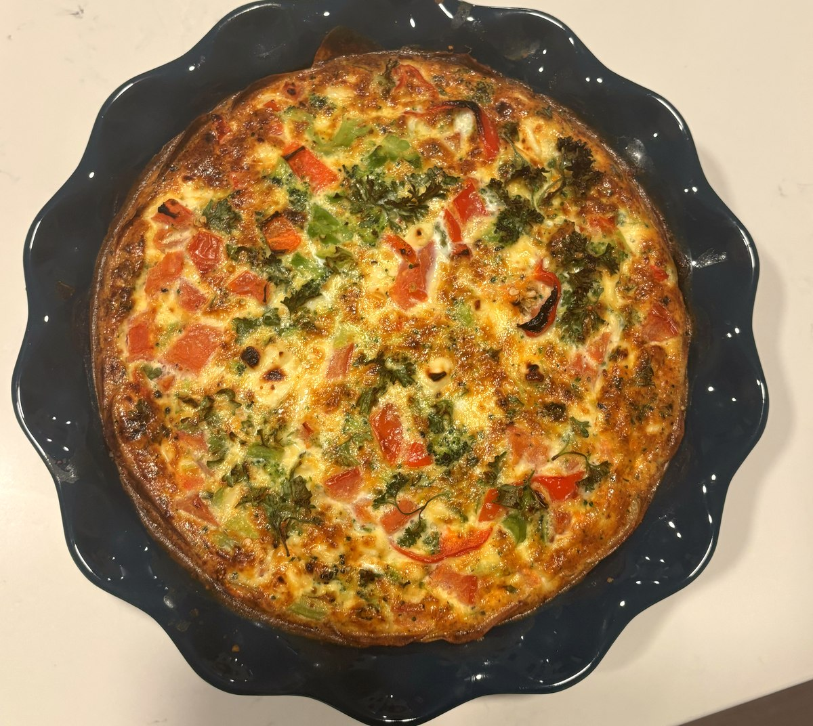
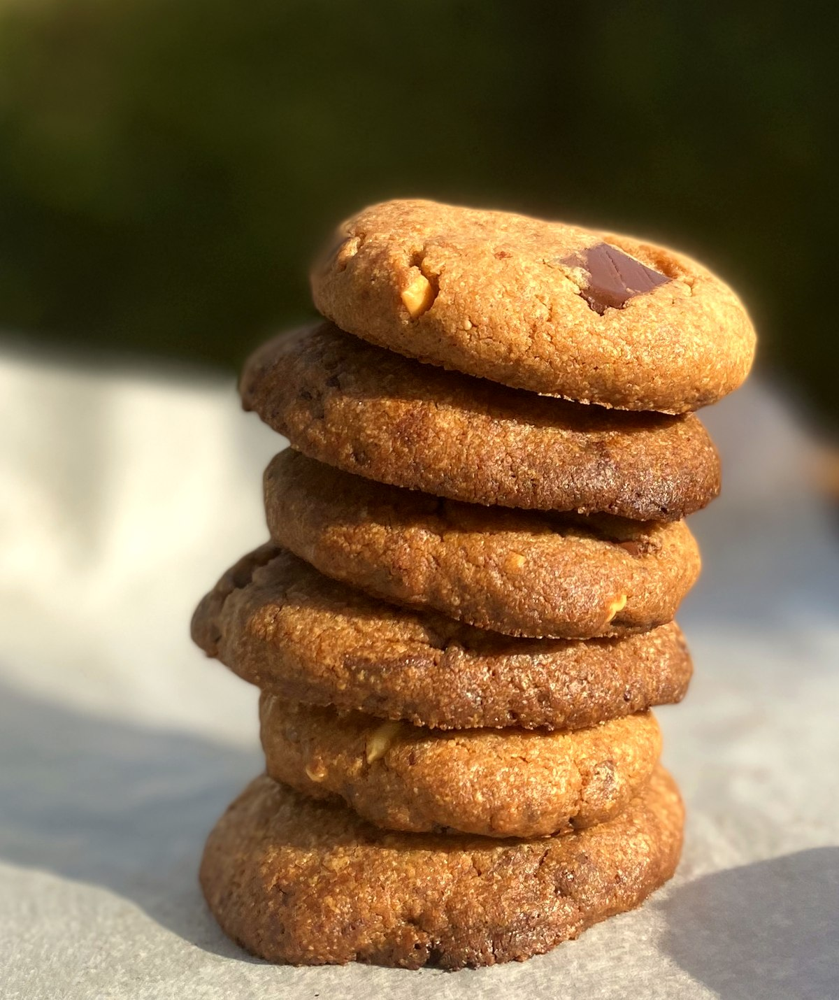

🧵 Craft 1 perfect dish.
Stop choosing one recipe. Stitch together your best one.
Found the perfect crust in one recipe and the perfect filling in another? FrankenFood merges them into a single, clean recipe card, ingredients and steps included.
No spam. Just one email when we launch.

Three recipes walk into a kitchen…
Tell us which part you want from which recipe. We'll stitch it into one clean set of ingredients and steps, no tab-switching, no guesswork.
🍪 Crust: NYT Cheesecake
🍋 Filling: Smitten Kitchen
🔥 Topping: BBC Brûlée
Demo output below, sign up to run this on your own recipes.
YOUR MERGED RECIPE
Lemon Brûlée Cheesecake Bars
Serves 9 · 45 min active, 3 hr chilled
Stitching your recipe…
Ingredients
- 1½ cups graham cracker crumbs (from NYT Cheesecake)
- 6 tbsp melted butter (from NYT Cheesecake)
- 3 large egg yolks + zest of 2 lemons (from Smitten Kitchen)
- 1 cup sweetened condensed milk (from Smitten Kitchen)
- 4 tbsp granulated sugar, for the torched top (from BBC Brûlée)
Steps
- Press crumb mixture into a lined pan; bake 8 min at 350°F.
- Whisk yolks, zest, and condensed milk; pour over crust.
- Bake 15 min until just set; chill 3 hours.
- Sprinkle sugar on top and torch until golden and crackled.
Stitched by real cooks



